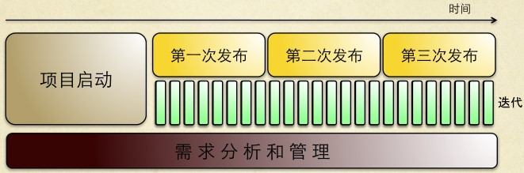
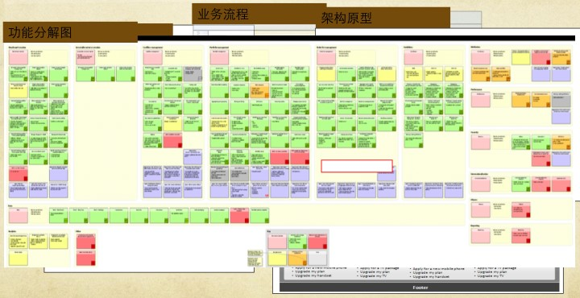
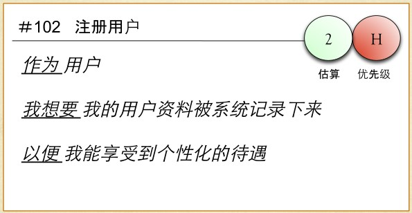
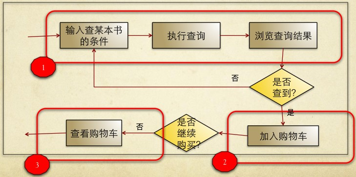
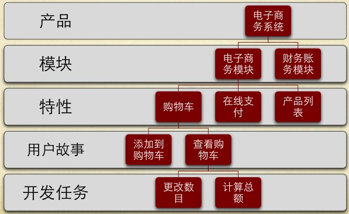
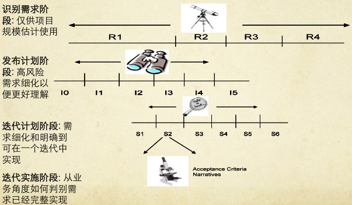
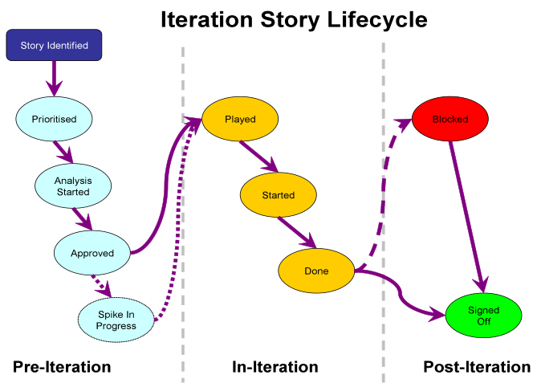
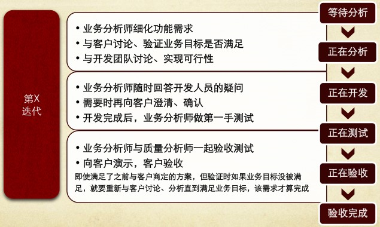
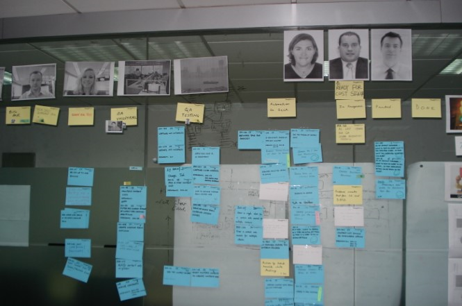
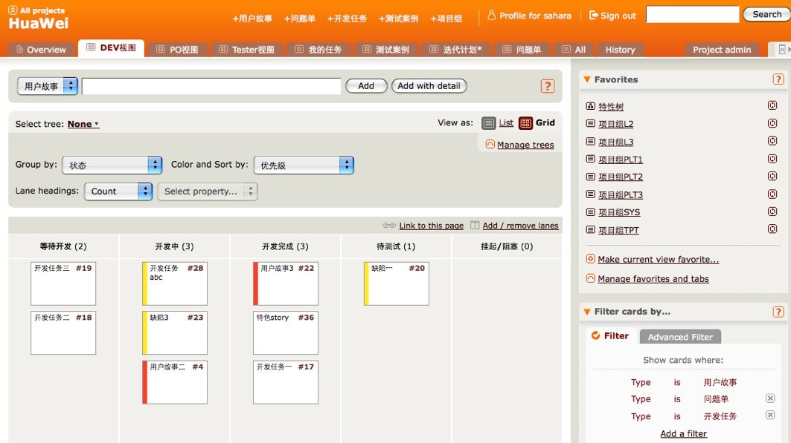

[TOC ]
1.需求从哪里来 ？
需求的获取
产品研发 － 市场部门
- 谁是产品的用户
- 产品的目标是什么
- 产品的竞争对手分析
- 投资回报分析
- 产品用户角色建模和交互设计
- 产品界面原型
- ⋯⋯
项目开发 － 客户
- 谁是项目的用户
- 项目的业务目标
- 项目的投资回报分析
- 客户当前的过程
- 客户未来的过程
- ⋯⋯
需求文档驱动的过程不堪重负
敏捷需求分析和管理过程

敏捷需求管理贯串项目始终 ：
- 初始阶段 – 识别需求 ， 仅供估算项目规模使用 ， “快速启动 ”；
- 发布计划阶段 – 高风险的需求进行可行性分析 ⋯⋯
- 迭代计划阶段 - 需求细化 ⋯⋯
- 迭代实施阶段 - 反复验证需求并确认需求被实现 ⋯⋯
- 每个迭代 - - 纳入新需求 ， 重新审视需求列表及优先级 ， 调整计划 ⋯⋯
项目启动阶段
- 目标和交付物
- 项目愿景和动机
- 快速产出可以开始开发的需求列表(粒度粗的Master Story)
- 确立可视化项目原型
- 了解技术风险
- 估算项目成本
- 制定发布和迭代计划（发布计划是动态的）
- 轻量的，可视的文档
项目启动阶段交付物
- 业务流程图
- 架构原型（技术架构、平台）
- 界面原型（PPT等）
- 功能分解图（故事墙）

2.需求如何表述 ？
用户故事卡片

用户故事的3C原则
- Card
用户故事卡片本身代表了需求的存在
- Conversation
用户故事所代表的一段对话和交流
- Confirmation
用户故事的确定性
用户故事XYZ表述
- X:用户角色
作为 。。。
- Y:目标系统提供的行为或功能
我希望 。。。
- Z:实现的业务价值或目标
以便于 。。。
角色流程(Role-Process)方法

-
作为用户，我希望能够通过书名和作者名 查找书籍，以便我能快速的购买我想要的 书
-
作为用户，我希望能够把我感兴趣的书籍 加入购物车，以便我能够批量购买
- 作为用户，我希望能够查看我目前购物车 内的书，以便我做出购买决定
INVEST原则
- Independent 可以独立开发
- Negotiable 可以协商
- Valuable 有价值
- Estimable 大小可评估
- Sized appropriately 合适粒度
- Testable 可测试验证
3.需求的分解

User Story的逐步细化

非功能性需求
- Accessibility 可用性
- Archiving 归档
- Auditability 可审计性
- Authentication 安全认证
- Authorization 授权
- Localization 本地化
- ⋯⋯
验收条件 (Acceptance Criteria)
- 如何验收用户故事？如何确定Story 已经被开发完成？如何进行估算？
- 验收条件
4.需求如何管理 ？
用户故事生命周期

迭代过程中，分析师怎么做？

可视化需求管理
- 来自于精益生产的看板管理(Kanban Management system)
- 目的是为了增强管理的透明性，鼓励每个 人都去发现问题和解决问题，而不是等待 别人来做

Mingle中的Story Wall

5.敏捷需求分析师必读
- 《User Stories Applied: For Agile Software Development》by Mike Cohn
- 《金字塔原理：思考、表达和解决问题的逻辑》（麦肯 锡40年经典培训教材）